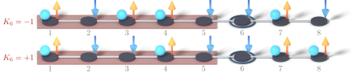
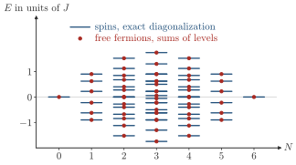

Advanced Quantum Materials 2027 · All lectures · Lecture notes
Session 7. Quantum Many-Body Entanglement and Tensor Networks
7.2b The Jordan-Wigner transformation
Fermions on two different sites anticommute, while spins commute, as we saw in Section 7.2a. How do we then write a spin with fermion operators? A string over the sites to the left carries the missing sign, so spin equals fermion times string, and the open XX chain of spins becomes a chain of free fermions.
The two languages differ in one sign, and the Jordan-Wigner transformation is the exact rule that fixes it. Let us first look at a single site. A spinless fermionic site has a local Hilbert space of dimension two, empty or full, and a spin-1/2 site also has a local Hilbert space of dimension two, down or up. The first guess is \(c_i^\dagger \leftrightarrow S_i^+\) and \(c_i \leftrightarrow S_i^-\), and on a single site this guess is correct. However, it fails when we have more than one site, since fermion operators on different sites anticommute, while spin operators on different sites commute. As a result, the naive identification gives the wrong relative signs between sites.
To fix this, we add to each site an extra phase that depends on the occupations. This phase is a string operator over all the sites to the left, chosen so that the exchange of two fermions gives the minus sign that the spin operators do not have by themselves. This mapping is called the Jordan-Wigner transformation.
The Jordan-Wigner transformation writes the spin operators of site \(i\) with the fermion operators,
\[S_i^+ = c_i^\dagger K_i, \qquad S_i^- = c_i K_i, \qquad S_i^z = n_i - \tfrac{1}{2}, \qquad K_i = \exp\!\left(i\pi \sum_{j<i} n_j\right), \tag{7.2}\]
where \(n_j = c_j^\dagger c_j\) is the fermion number operator on site \(j\), and an occupied site is an up spin. The string \(K_i\) is the parity of the fermions to the left of site \(i\), so spin equals fermion times string.
The string operator \(K_i\) is built only from the occupation numbers to the left of site \(i\). For this reason it commutes with all local operators on sites \(j \ge i\), and it counts, mod 2, how many fermions are to the left. We can check directly that (7.2), built in this way, gives the full \(SU(2)\) commutation algebra of spin-1/2 operators on every site and between every pair of sites. For this check we only need the fermionic anticommutation relations for \(c_i, c_i^\dagger\) and the string. In short, spin equals fermion times string. Figure 7.1 shows what the string does. It counts the fermions to the left of site \(i\) and gives their parity, so a change of a single occupation anywhere in that region changes the sign of \(S_i^+\). On this page the sites are counted from 1, as in Figure 7.1.
The steps Why the string turns anticommutation into commutation, from two sites to a ring
Let us take the simplest case, two sites. The string of site 1 is \(K_1=1\), since its sum is empty, and the string of site 2 is \(K_2=e^{i\pi n_1}=1-2n_1\), since \(n_1\) is 0 or 1. So
\[S_1^+=c_1^\dagger,\qquad S_2^+=c_2^\dagger\,(1-2n_1).\]
The string acts on site 1 in two ways, depending on its side,
\[c_1^\dagger\,(1-2n_1)=c_1^\dagger,\qquad (1-2n_1)\,c_1^\dagger=-c_1^\dagger,\]
because \(c_1^\dagger n_1=0\) and \(n_1c_1^\dagger=c_1^\dagger\), meaning that after \(c_1^\dagger\) the site is full. The operator \(c_2^\dagger\) commutes with \(n_1\), so
\[S_1^+S_2^+=c_1^\dagger(1-2n_1)\,c_2^\dagger=c_1^\dagger c_2^\dagger,\qquad S_2^+S_1^+=c_2^\dagger(1-2n_1)\,c_1^\dagger=-c_2^\dagger c_1^\dagger=c_1^\dagger c_2^\dagger.\]
The two products are the same, so the spins commute while the fermions anticommute. The minus sign of the exchange of the two fermions is canceled by the minus sign that the string gives when it acts after \(c_1^\dagger\).
In the same way the string cancels between two neighbors, \(S_1^+S_2^-=c_1^\dagger c_2\,(1-2n_1)=c_1^\dagger c_2\). In a longer chain the strings of the neighbors \(i\) and \(i+1\) leave only \(1-2n_i\), so \(S_i^+S_{i+1}^-=c_i^\dagger c_{i+1}\) by the same step. For two sites that are not neighbors the string of the sites in between stays, as in \(S_1^+S_3^-=c_1^\dagger(1-2n_2)\,c_3\).
On a ring of \(L\) sites the bond from site \(L\) back to site 1 keeps such a string, over the \(L-2\) sites in between. The term \(S_L^+S_1^-\) is nonzero only on states with site 1 full and site \(L\) empty, so the sites in between hold \(N-1\) of the \(N\) fermions and \(S_L^+S_1^-=-(-1)^N\,c_L^\dagger c_1\). So the closing bond has the hopping of the other bonds for an odd \(N\) and the opposite hopping for an even \(N\). The fermions of a ring are then periodic for an odd \(N\) and antiperiodic for an even \(N\).

This is the one explicit link in the course between the two languages that we have used. By (7.2), the fermionic operators of Sessions 1 to 5 are related to the spin operators of Session 6 and, as we will see, of Session 8. So the two are not only analogous to each other. It also explains a practical choice that we make for the rest of this session. Since interacting fermionic Hamiltonians and interacting spin Hamiltonians are mathematically equivalent, we can work only in the spin representation from now on, and we will do so. The reason is that spin operators on different sites commute, so there is no fermionic sign to keep track of when we cut the chain, and this makes the counting of entanglement below clean.

g1_xx_chain_fermions.py
The string of site 6 and the spin operator are
\[K_6=\exp\Big(i\pi\sum_{j<6}n_j\Big),\qquad S_6^+=c_6^\dagger K_6.\]
The filled circles are fermions, and site 6 is empty. Which chain gives \(S_6^+=-c_6^\dagger\)?
Show the answers
- A. ✗ False
This is false. Two fermions sit to the left of site 6, so \(K_6=(-1)^2=+1\) and \(S_6^+=+c_6^\dagger\).
- B. ✗ False
This is false. Four fermions give \(K_6=(-1)^4=+1\). The string counts the parity and not the number, so four fermions act as zero.
- C. ✓ True
This is true. Three fermions on the sites 1 to 5 give \(K_6=(-1)^3=-1\), so \(S_6^+=-c_6^\dagger\). If we take one fermion away from the left of site 6, \(K_6\) goes back to \(+1\) while \(c_6^\dagger\) stays the same.
The Jordan-Wigner transformation writes
\[S_i^+=c_i^\dagger K_i,\qquad K_i=\exp\Big(i\pi\sum_{j<i}n_j\Big).\]
What is the string \(K_1\) of the first site of a chain?
Show the answers
- A. ✗ False
This is false. For a chain of a single site \(S_1^+\) must take \(|{\downarrow}\rangle\) to \(|{\uparrow}\rangle\) with matrix element \(+1\). The choice \(K_1=-1\) would give \(-1\).
- B. ✓ True
This is true. The sum runs over \(j<1\), which is empty for the first site. An empty sum gives the exponential of zero, which is \(1\).
- C. ✗ False
This is false. The string is an exponential, so it is never zero. If \(S_1^+\) vanished, a chain of one site could not flip a spin from down to up, which \(S^+\) does.
Two neighbors have the XX coupling
\[J\,\big(S_i^xS_{i+1}^x+S_i^yS_{i+1}^y\big).\]
What does it become with the Jordan-Wigner transformation?
Show the answers
- A. ✗ False
This is false. It misses the factor \(\tfrac12\) of \(S^xS^x+S^yS^y=\tfrac12(S^+S^-+S^-S^+)\). On two sites with one fermion it gives the levels \(\pm J\), while the two spins give \(\pm J/2\).
- B. ✓ True
This is true. We write \(S_i^xS_{i+1}^x+S_i^yS_{i+1}^y=\tfrac12(S_i^+S_{i+1}^-+S_i^-S_{i+1}^+)\), and the strings of two neighbors cancel, \(S_i^+S_{i+1}^-=c_i^\dagger c_{i+1}\). So the open XX chain is a chain of free fermions with the hopping \(J/2\).
- C. ✗ False
This is false. This term creates or destroys two fermions, so it changes \(S^z_\text{tot}\) by 2, while the XX coupling keeps \(S^z_\text{tot}\). It is the image of \(J\,(S_i^xS_{i+1}^x-S_i^yS_{i+1}^y)\).
Write the XX coupling of two spins, \(J\,(S_1^xS_2^x+S_1^yS_2^y)\), with the fermions of the Jordan-Wigner transformation, and find its four levels. Compare them with the levels of the two spins.
Solution
We write \(S^x=\tfrac12(S^++S^-)\) and \(S^y=\tfrac1{2i}(S^+-S^-)\). The terms \(S_1^+S_2^+\) and \(S_1^-S_2^-\) cancel, and
\[J\,(S_1^xS_2^x+S_1^yS_2^y)=\tfrac J2\,(S_1^+S_2^-+S_1^-S_2^+).\]
The strings are \(K_1=1\) and \(K_2=1-2n_1\), and they cancel in both terms, so
\[J\,(S_1^xS_2^x+S_1^yS_2^y)=\tfrac J2\,(c_1^\dagger c_2+c_2^\dagger c_1).\]
This is a hopping \(J/2\) between two sites, and it keeps the number of fermions. With zero or two fermions it gives 0. With one fermion it is the \(2\times2\) matrix with \(J/2\) off the diagonal, with the bonding level \(-J/2\) and the antibonding level \(+J/2\). So the four levels are \(-J/2\), \(0\), \(0\) and \(+J/2\).
With spins, the states \(|{\uparrow\uparrow}\rangle\) and \(|{\downarrow\downarrow}\rangle\) have the energy 0, since \(S_1^+S_2^-\) and \(S_1^-S_2^+\) annihilate them. The coupling turns \(|{\uparrow\downarrow}\rangle\) into \(|{\downarrow\uparrow}\rangle\) with the amplitude \(J/2\), so the states with \(S^z_\text{tot}=0\) give \(\pm J/2\). The two languages give the same four levels, with the number of fermions \(N=S^z_\text{tot}+1\).
This is the case of two sites of Schematic 7.3. The same cancellation of the strings turns the open XX chain of any length into free fermions, so its levels come from a single-particle calculation of \(L\) levels instead of a matrix of dimension \(2^L\).